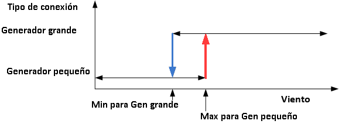

Obiettivo:Per capire perché il sistema cambia modalità/generatore e il suo effetto sulla potenza e la stabilità.
Cosa osservare:Modalità/stato, punto di potenza, velocità del rotore e criteri di cambiamento.
Cosa notare:Quando si verifica il cambiamento, quale soglia lo innesca e come si stabilizza in seguito.
💡 Controllare se il cambiamento si verifica a causa di una soglia fissa, isteresi, o condizione di sicurezza.
Questa pratica classe mira a studiare i concetti che circondano il cambiamento nel tipo di connessione generatore (tra 4 e 6 poli magnetici).
Il motivo di base è quello di utilizzare meglio il vento. Come mostrato nella figura 1Piazzola attiva (a-the-feathers), per una determinata lama, c'è un valore ottimale tra velocità del vento e velocità di rotazione della lama (TSRoptimo).
Si noti che il rapporto tra la velocità di rotazione dell'albero generatore e quella delle lame è fisso (il rapporto di marcia). Inoltre, quando in produzione, il generatore rimane molto vicino alla velocità sincrona. Controllare che con vento alto (17 m/s) la potenza è nominale (1.300 kW) e la velocità del generatore è di 1.509.7 rpm: cioè, lo scivolo per la massima potenza è solo 0,65% (= (1509.7 / 1500) -1). Il risultato di queste due osservazioni è che le lame sono costrette ad operareuna velocità costante.
Al fine di utilizzare meglio il vento, le pale di questo tipo di turbina eolica sono appositamente progettate in modo che l'area corrispondente alTSR ottimalenon è un singolo punto ma una vasta gamma. In ogni caso, questa gamma non copre un rapporto tra la velocità nominale del vento (circa 14 m/s nella turbina eolica effettiva) e una# 'velocità del vento, per esempio 6 m/s, che sono comuni.
La soluzione adottata in questa turbina eolica, comune in diversi modelli di vari produttori, consiste in una'gearbox' 'meccanismo.In alcuni modelli (non quello utilizzato per il simulatore), ci sono due generatori elettrici, collegati all'albero della lama per mezzo di un moltiplicatore con due uscite. Nel caso in cui la turbina eolica sia simulata, il meccanismo del cambio si basa sull'avere un generatore con un avvolgimento dello statore "scelto", in modo che cambiando la connessione di questi "chunks" sia possibile avere 2 paia di poli (grande generatore) o 3 coppie di pali (piccolo generatore). Questi due casi corrispondono a velocità sincrone di 1500 rpm per 2 coppie, o 1000 rpm per 3 coppie.
SynchronismSpeed = 50 Hz * 60 secondi / PairsOfPoles
C'è un altroElettricità 'la ragione, che ha a che fare conFattore di potenza 'caratteristiche dei generatori di induzione. Nelcaratteristiche delle tabelle, si può vedere che per la stessa potenza attiva, il fattore di potenza è migliore il più vicino il potere attivo è alpotenza nominale. Nel caso della connessione a 2 poli, la potenza nominale è di 1300 kW, mentre con 3 poli scende a 350 kW. Se guardiamo il fattore di potenza della connessione a 3 coppie di pali per una potenza attiva di 250 kW, vediamo che è 0.867, mentre la generazione di questi 250 kW con la connessione a 2 coppie di pali implica un fattore di potenza di 0,614.
Il cambio di connessione del generatoreprotocolloimplementa un meccanismo di isteresi per evitare oscillazioni (frequenti cambiamenti) quando il valore del vento è vicino al valore in cui tali cambiamenti sono decisi. Vedi la figura seguente.

Controllare questi concetti con gli eserciziIn produzione, modificare il vento per cambiare la connessione da Small a Large GeneratoreIn produzione, modificare il vento per cambiare la connessione da Grande a Piccolo Generatore.